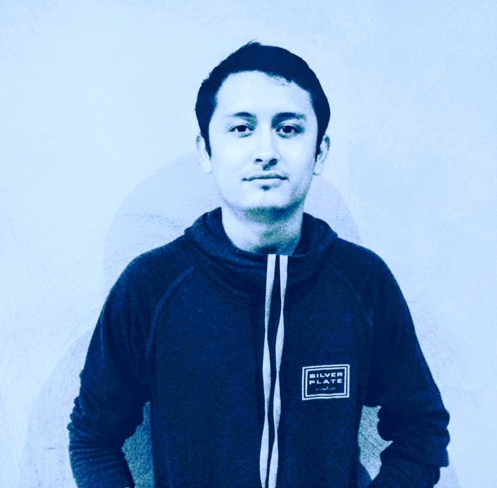

<h1>This is varo</h1>
<!-- <!DOCTYPE html>
<head>
		<meta charset="UTF-8">
		<link rel='stylesheet' href="cv.css">
  </head>
  <body>
    <div id="main">
      <div id="intro">
        <div class="intro" id="portrait">
          
        </div>
        <div class="intro" id="intro-text">
          <p><strong>alvaro</strong>@<strong>padillamendoza</strong></p>
          <p class="blank">- - - - - - - - - - - -</p>
          <p><strong>Location</strong><span class="blank">: San Pedro Tlaquepaque, Jal. México</span></p>
          <p><strong>Age</strong><span class="blank">: 23</span></p>
          <p><strong>Mail</strong><span class="blank">: padillaalvaro.ap@gmail.com</span></p>
          <p><strong>Phone</strong><span class="blank">: (312) 317 7019</span></p>
          <p class="blank">- - - - - - - - - - - - - - - - - -</p>
          <p><strong>University</strong><span class="blank">: Universidad de Colima</span></p>
          <p><strong>Degree</strong><span class="blank">: Telematics Engineer</span></p>
          <p><strong>Graduation Year</strong><span class="blank">: 2017</span></p>
          <div id="colors">
            <span class="box1" style="background:#585858;"></span>
            <span class="box1" style="background:#FF4000;"></span>
            <span class="box1" style="background:#04B4AE;"></span>
            <span class="box1" style="background:#F7FE2E;"></span>
            <span class="box1" style="background:#58ACFA;"></span>
            <span class="box1" style="background:#A9BCF5;"></span>
            <span class="box1" style="background:#58FAF4;"></span>
            <span class="box1" style="background:#FFFFFF;"></span>
          </div>
        </div>
      </div>
      <div id="resume">
        <p><strong>alvaro</strong><span class="blank">@padilla ~ % ls -aup</span></p>
        <p><span class="subject">Skill_highlights.me</span><span class="subject dir">Experience<span class="slash">/</span></span></span><span class="subject dir">Projects<span class="slash">/</span></span><span class="subject">Interests.me</span><span class="subject">Education.me</span><span class="subject">Languages.me</span><span class="subject">Coursework.me</span></p>
        <p><strong>alvaro</strong><span class="blank">@padilla ~ % cat Skill_highlights.me</span></p>
        <ul class="blank">
          <li><p>Operative Systems</p>
            <ul>
              <li><p>Linux</p></li>
              <li><p>Mac OS</p></li>
              <li><p>Windows</p></li>
            </ul>
          </li>
          <li><p>Languages</p>
            <ul>
              <li><p>C</p></li>
              <li><p>C++</p></li>
              <li><p>HTML</p></li>
              <li><p>JavaScript</p></li>
              <li><p>COBOL</p></li>
              <li><p>JCL</p></li>
            </ul>
          </li>
          <li><p>Databases</p>
            <ul>
              <li><p>MySQL</p></li>
            </ul>
          </li>
        </ul>
        <p><strong>alvaro</strong><span class="blank">@padilla ~ % cd Experience</span></p>
        <p><strong>alvaro</strong><span class="blank">@padilla ~<strong>/Experience</strong> % ls -alu</span></p>
        <p class="blank">-rwxr--r-- 1 alvaro siteldi 5.0K Jun 2016 web_developer_internship</p>
        <p class="blank">-rwxr--r-- 1 alvaro TCS&ensp;&ensp;&ensp;&ensp;&ensp;5.0K Jan&ensp;2017 mainframe_developer</p>
        <p><strong>alvaro</strong><span class="blank">@padilla ~<strong>/Experience</strong> % cat web_developer_internship</span></p>
        <p class="blank"><strong>Web Developer (internship)</strong> Aug 2016 – Jan 2017</p>
        <p class="blank"><strong>Siteldi Solutions</strong> – Colima, México</p>
        <p class="blank">Collaboration in the development of a web system into the project </p>
        <p class="blank"><i>"Diseño e implementasión de un sistema multimedia y de </p>
        <p class="blank">comunicación para vehículos conectados (MUVES)"</i></p>
        <p><strong>alvaro</strong><span class="blank">@padilla ~<strong>/Experience</strong> % cat mainframe_developer</span></p>
        <p class="blank"><strong>Mainframe Developer</strong> Jan 2017 – Feb 2018</p>
        <p class="blank"><strong>Tata Concultancy Services</strong> – Jalisco, México</p>
        <p class="blank">Software development in COBOL, JCL and EasyTrieve programming</p>
        <p class="blank">languages and DB2 data bases.</p>
        <p class="blank">Supporting test enviroments on fixing any issue related with jobs from daily</p>
        <p class="blank">batches.</p>
        <p class="blank">Improvement and software maintenance.</p>
        <p><strong>alvaro</strong><span class="blank">@padilla ~<strong>/Experience</strong> % cd ../Projects</span></p>
        <p><strong>alvaro</strong><span class="blank">@padilla ~<strong>/Projects</strong> % ls -alu</span></p>
        <p class="blank">-rwxr--r-- 1 alvaro UCOL&ensp;8.0K Aug 2014 integrative_project_3rd_semester</p>
        <p class="blank">-rwxr--r-- 1 alvaro UCOL&ensp;8.0K Jan 2015 integrative_project_4th_semester</p>
        <p class="blank">-rwxr--r-- 1 alvaro UCOL&ensp;8.0K Aug 2015 integrative_project_5th_semester</p>
        <p><strong>alvaro</strong><span class="blank">@padilla ~<strong>/Projects</strong> % cat integrative_project_3rd_semester</span></p>
        <p class="blank"><strong>Integrative Project 3rd semester </strong>Aug 2014 – Dec 2014</p>
        <p class="blank"><strong>Faculty of Telematics, Universidad de Colima </strong>– Colima, México</p>
        <p class="blank"><i>“Power supply with digital voltmeter”</i></p>
        <p class="blank">
          <ul class="blank">
            <li><p>Design, development and integration of the power supply.</p></li>
            <li><p>Development of the electronic circuit of a digital voltmeter.</p></li>
          </ul>
        </p>
        <p><strong>alvaro</strong><span class="blank">@padilla ~<strong>/Projects</strong> % cat integrative_project_4th_semester</span></p>
        <p class="blank"><strong>Integrative Project 3rd semester </strong>Jan 2015 – Jul 2015</p>
        <p class="blank"><strong>Faculty of Telematics, Universidad de Colima </strong>– Colima, México</p>
        <p class="blank"><i>“Development and design of a traveling computer”</i></p>
        <p class="blank">
          <ul class="blank">
            <li><p>Coding in C++ of the program for the embedded system.</p></li>
            <li><p>Design, development and integration of the embedded system to capture and to show:</p>
              <ul>
                <li><p>Temperature</p></li>
                <li><p>Course</p></li>
                <li><p>Luminosity percentage</p></li>
                <li><p>Barometric pressure</p></li>
              </ul>
            </li>
          </ul>
        </p>
        <p><strong>alvaro</strong><span class="blank">@padilla ~<strong>/Projects</strong> % cat integrative_project_5th_semester</span></p>
        <p class="blank"><strong>Integrative Project 3rd semester </strong>Aug 2015 – Dec 2015</p>
        <p class="blank"><strong>Faculty of Telematics, Universidad de Colima </strong>– Colima, México</p>
        <p class="blank"><i>“Meteorological station”</i></p>
        <p class="blank">
          <ul class="blank">
            <li><p>Design, development and integration of the embedded system to capture:</p>
              <ul>
                <li><p>Temperature</p></li>
                <li><p>Luminosity percentage</p></li>
                <li><p>Humidity</p></li>
              </ul>
            </li>
            <li><p>Design and development of the databases on MySQL to storage the caught data.</p></li>
            <li><p>Design and development of the web page on PHP, HTML, CSS and </p>
                <p>JavaScript to show meteorological forecasts.</p>
            </li>
          </ul>
        </p>
        <p><strong>alvaro</strong><span class="blank">@padilla ~<strong>/Projects</strong> % cd ..</span></p>
        <p><strong>alvaro</strong><span class="blank">@padilla ~ % cat Interests.me</span></p>
        <p class="blank">I consider myself as a passionate person on Open Source, Linux enviroment,</p>
        <p class="blank">coding, always looking on optimizing software and improving it by applying best</p>
        <p class="blank">practices, and trying to keep going on learning new technologies as much as it's</p>
        <p class="blank">possible.</p>
        <p><strong>alvaro</strong><span class="blank">@padilla ~ % cat Education.me</span></p>
        <p class="blank">&emsp;&emsp;Engineer's Degree, Telematics 2013 – 2017</p>
        <p class="blank">&emsp;&emsp;Universidad de Colima – Colima, México</p>
        <p><strong>alvaro</strong><span class="blank">@padilla ~ % cat Languages.me</span></p>
        <ul class="blank">
          <li><p>Spanish (native)</p></li>
          <li><p>English (intermediate)</p></li>
        </ul>
        <p><strong>alvaro</strong><span class="blank">@padilla ~ % cat Coursework.me</span></p>
        <ul class="blank">
          <li>
            <p><strong>"Networks with Cisco Routers" </strong>May 2014</p>
            <p><strong>Faculty of Telematics, Universidad de Colima </strong>– Colima, México</p>
          </li>
          <li>
            <p><strong>"XV Simposium Internacional de Telemática” </strong>May 2014</p>
            <p><strong>Universidad de Colima </strong>– Colima, México</p>
          </li>
          <li>
            <p><strong>"IPv4 and IPv6” </strong>May 2016</p>
            <p><strong>Faculty of Telematics, Universidad de Colima </strong>– Colima, México</p>
          </li>
        </ul>
      </div>
    </div>
  </body>
</html>
-->
